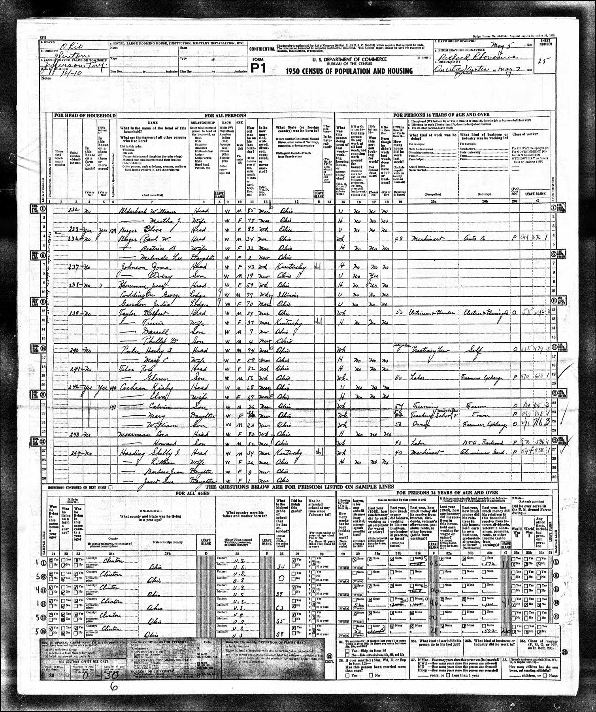

Melinda Lee Berger b. 1947
Partner of Peter's uncle Kalvis Danenbergs.
Living. As for every living relative on this site, the birth date is given by year only, and no current address is shown.
Melinda Lee Berger was born in 1947 in Ohio, United States2,3.
Family
- Partner
- Kalvis Danenbergs b. 1946
- Children
- Justin Danenbergs b. 1975 documented
Life events
| Event | Date | Place and details |
|---|---|---|
| Born | 1947 | Ohio, United States2,3 |
| Lived | 5 May 1950 | Midland, Clinton County, Ohio, United States4 |
| Note | 25 Jul 1953 | Midland, Clinton County, Ohio, United States Named as one of the two surviving great-grandchildren ('Malinda Berger & David Ostheller') in the obituary of her paternal great-grandmother Olive 'Ollie' Garner Berger (born 2 Dec 1866 in Westboro, Clinton County, Ohio, youngest of the 11 children of Friends minister James Garner and Grace Moon…11 |
| Education | 1965 | Blanchester, Ohio, United States Blanchester High School, Blanchester, Ohio, class of 1965. Her own alumni profile gives maiden name Berger, occupation "Teacher", married "Yes", favourite school memory "GAA Sports" (the Girls' Athletic Association), and under About Me: "Taught school for 40 years". Leaving school in 1965 fits a…7 |
| Work | bet 1969 and 2009 | Ohio, United States Schoolteacher — "Taught school for 40 years", in her own words on her alumni profile. Neither the schools nor the exact years are given; forty years from about 1969 would end about 2009. Worth asking her which schools, and in which towns, because that is forty years of dated places.8 |
| Lived | 3 Jan 1971 | Columbus, Ohio, United States5 |
| Lived | bet 28 Sep 1973 and 2026 | Midland, Clinton County, Ohio, United States6 |
| Work | bet 1 Jul 1974 and 30 Jun 2013 | Ohio, United States Licensed educator with the Ohio State Board of Education / Ohio Department of Education (Educator State ID OS1014161, Birth Year 1947) from 1 July 1974 through 30 June 2013 across 18 state teaching credentials: (1) Permanent Non-Tax Certificate (Credential 2975871, effective 07/01/1974, issued…9 |
| Note | 17 Jan 1982 | Wilmington, Clinton County, Ohio, United States Named as the surviving daughter ('Melinda Danenbergs') in the obituary of her father Paul W. Berger (born 29 January 1916 in Westboro, Ohio — indexed as 'Westboro, Taylor, Wisconsin, USA' in the Newspapers.com obituary index and 'Ohio, USA' in the Ohio Death Index — son of Guy P. Berger and Ora…12 |
| Note | 28 Jan 1992 | Wilmington, Clinton County, Ohio, United States Named as the surviving daughter ('Melinda Berger Danenbergs') in the obituary of her mother Beatrice Becker Berger (born 23 May 1917 in Marion Township, Clinton County, Ohio, daughter of William Van [Becker] and Cora Malinda Murry Becker; retired bookkeeper / accounting and auditing clerk in motor…13 |
| Work | bet 2017 and 2026 | Ohio, United States Local historian and contributing columnist to the Wilmington News Journal (wnewsj.com, 1547 Rombach Avenue, Wilmington, Ohio), writing about the history of Jefferson Township, Midland, Westboro, Blanchester and Clinton County. Identified columns: "Westboro ceremony has storied history" (1 June…10 |
| Note | 17 Oct 2019 | Midland, Clinton County, Ohio, United States Compiled and contributed a collection of historical items from 1854–1903 regarding Westboro/Jefferson Township and the Convent of the Brown County Ursulines at St. Martins, Ohio (including an 1854 Catholic Telegraph advertisement for the US Hotel in Westborough with her personal note '(re: when I…14 |
| Note | 2 Apr 2020 | Midland, Clinton County, Ohio, United States Contributed a historical essay to the Wilmington News Journal ('Throwback Thursday: Ice cream, and "The Big Onion"', 2 April 2020) documenting the nineteenth-century railroad flag-stop boarding house 'The Big Onion', Klock's Crossing / Pleasant Grove, the Big Scott Woods lumber trade, and the…15 |
| Note | bet 12 Jun 2021 and 30 Jul 2026 | Ohio, United States Served continuously as Secretary of the Jefferson Township School Alumni & Friends Association (representing alumni of the former Jefferson Township School in Westboro/Midland, with an Alumni Committee from the Classes of '64, '61, '81, and '65 who were consolidated into Blanchester Schools after…16 |
| Note | 2 Sep 2022 | Midland, Clinton County, Ohio, United States Authored a signed local history column in the Wilmington News Journal ('Temperance and women's rights', 2 September 2022, 'By Melinda Danenbergs For The News Journal') chronicling the 1812–1840 settlement of Military Survey 3045 (Breckenridge Survey 3045) and Original Town of Westboro Lots 1–4,…17 |
| Note | 13 Jun 2026 | Ohio, United States Secretary of the Jefferson Township School Alumni & Friends association. At its 103rd annual meeting, held on Saturday 13 June 2026 in the Westboro Community Church fellowship hall, she sat with President Ed Pagett, Vice-President Laura Summers and Treasurer Darlene Kassner, and she and Kassner…18 |
Records



Sources
- MyHeritage family tree 'Dzimta' of Peter's third cousin (his family site), member GEDCOM export of 26 Oct 2026, I500166 (person-6500166), GEDCOM lines 10258–10272.
NAME Melinda Lee /Berger/
His confirmed Smart Match with another tree: Voroņinu dzimtas lapa, https://www.myheritage.lv/person-1002068_OYYV6GENXOY2D7YW6XGE4NH6BKEVORA_OYYV6GENXOY2D7YW6XGE4NH6BKEVORA/melinda-danenbergs-born-berger (added by confirming the match).
- Ohio Birth Index Entry for Melinda Berger (1947, Cert. No. 1947120911) & Ohio Voter Registration for Melinda Lee Danenbergs.
Name Melinda Berger | Birth Date 1947 | Birth Place Ohio, USA | Certificate Number 1947120911 | Additional Information Paul … Name Melinda Lee Danenbergs | Birth Date 1947 | Registration Date 28 Sep 1973 | Registration Place USA | Residence Street Address [address omitted] 45148 | Residence Place Midland, Ohio, USA | Residence Postal Code 45148
1947 in Ohio, daughter of Paul W. Berger (born 29 January 1916 in Westboro, Clinton County, Ohio; died 17 January 1982 in Wilmington, Clinton County, Ohio) and Beatrice Becker Berger (born 23 May 1917 in Marion Township, Clinton County, Ohio; died 28 January 1992 in Wilmington, Clinton County, Ohio), under Ohio Birth Certificate Number 1947120911. Her official Ohio Birth Index entry ('Melinda Berger, Birth Date: 1947, Birth Place: Ohio, USA, Certificate Number: 1947120911, Additional Information: Paul'), her official Ohio Voter Registration record ('Melinda Lee Danenbergs, Birth Date: 1947, Registration Date: 28 Sep 1973, Residence Street Address: [address omitted] 45148, Residence Place: Midland, Ohio, USA'), and all three U.S. Public Records Index Volume 2 entries record her birth date as 1947 (correcting the corrupted '1947' date shown on third-party scraper ohioresidentdatabase.com).
- Melinda Lee Danenbergs, Age 79, Midland, OH.
Overview of Melinda Lee Danenbergs — Lives in: Midland, Ohio. DOB: 1947
Born 1947. She had no birth date at all in the tree. The place is not given; she went to high school in Blanchester, Clinton County, Ohio, so Clinton County or its neighbours is the likely birthplace.
- 1950 U.S. Census, Jefferson Township, Clinton County, Ohio, ED 14-10, Sheet 25, Dwellings 235–236, Lines 3–6 (Olive Berger & Paul W. Berger Households).
235 — Yes | Yes | 139 | Berger Olive | Head | W | F | 83 | Wd | Ohio | U / 236 — No | [blank] | Berger Paul W. | Head | W | M | 34 | Mar | Ohio | Wk | 48 | Machinist | Auto Co | P / — Beatrice B. | Wife | W | F | 32 | Mar | Ohio | H / — Melinda Lee | Daughter | W | F | 2 | Nev | Ohio … [Sample Line 6:] Yes [same house a year ago] | Father: U.S. | Mother: U.S. | Highest grade: 0
Enumerated on 5 May 1950 in the 1950 U.S. Federal Census in Jefferson Township, Clinton County, Ohio (Enumeration District 14-10, Sheet 25, Dwelling 236 on [address omitted], lines 4–6) as 'Melinda Lee Berger', age 2, female, white, never married, born in Ohio, in the household of her father 'Paul W. Berger' (age 34, born Ohio, machinist at an auto company, working 48 hours the previous week) and mother 'Beatrice B. Berger' (age 32, born Ohio, keeping house). On Sample Line 6 at the bottom of the sheet, Melinda Lee Berger is recorded as living in the same house in Clinton County, Ohio one year earlier, with both parents born in the U.S. Immediately adjacent at Dwelling 235 (Line 3, on a farm, Agricultural Questionnaire 139) is her 83-year-old widowed paternal great-grandmother 'Olive Berger' ('Aunt Ollie', Olive Garner Berger, 1866–1953).
- Marriage Licenses, The Columbus Dispatch (Columbus, Ohio), 3 January 1971, p. 79.
Kalvis Danenbergs, 24, student. of [address omitted], and Melinda L. Berger, 23, of [address omitted].
Translation: Kalvis Danenbergs, 24, student, of [address omitted], and Melinda L. Berger, 23, of [address omitted].
Residing at [address omitted], Columbus, Ohio, age 23 (born c. 1947), at the time of her Franklin County marriage license application with Kalvis Danenbergs, 24, student, of [address omitted], Columbus.
- Melinda Lee Danenbergs — Voting Profile.
Melinda Lee Danenbergs (age 79) is currently listed at [address omitted], Midland, 45148 Ohio, is not affiliated to any political party. Melinda is registered to vote since September 28, 1973 in Clinton County.
[address omitted], Midland, Ohio 45148; registered to vote in Clinton County since 28 September 1973, voter status Active, no party affiliation. Signing a 2010 newspaper guest book she gave the same place: "Melinda & Kalvis Danenbergs, Midland, Ohio".
- Melinda Danenbergs (Melinda Berger), Blanchester High School Class of 1965.
First Name Melinda · Last Name Danenbergs · Maiden Name Berger · Graduation Year Class of 1965 · Gender Female · State/Province OH · Country United States · Occupation Teacher · Married Yes · Favorite School Memory GAA Sports · About Me Taught school for 40 years
Blanchester High School, Blanchester, Ohio, class of 1965. Her own alumni profile gives maiden name Berger, occupation "Teacher", married "Yes", favourite school memory "GAA Sports" (the Girls' Athletic Association), and under About Me: "Taught school for 40 years". Leaving school in 1965 fits a July 1947 birth exactly.
- Melinda Danenbergs — About Me.
Occupation Teacher … About Me Taught school for 40 years
Schoolteacher — "Taught school for 40 years", in her own words on her alumni profile. Neither the schools nor the exact years are given; forty years from about 1969 would end about 2009. Worth asking her which schools, and in which towns, because that is forty years of dated places.
- Educator Profile: OS1014161 — Melinda L Danenbergs (1947).
Educator State ID: OS1014161 | Last Name: Danenbergs | First Name: Melinda | Middle Name: L | Birth Year: 1947 … Permanent Non Tax Non-Tax Certificate | Inactive | 07/01/1974 | 09/16/1974 | 12/31/2500 | 2975871 … 5 Year Professional High School (7-12) License | Expired | 07/01/2008 | 04/17/2008 | 06/30/2013 | 20219369 | Teaching Fields: Health [080101] 04/17/2008, Physical Education [080310] 04/17/2008, Visual Art [020015] 04/17/2008 | Endorsements: Middle Grades [180200] 04/17/2008
Licensed educator with the Ohio State Board of Education / Ohio Department of Education (Educator State ID OS1014161, Birth Year 1947) from 1 July 1974 through 30 June 2013 across 18 state teaching credentials: (1) Permanent Non-Tax Certificate (Credential 2975871, effective 07/01/1974, issued 09/16/1974); (2) four 4-Year Provisional High School (7–12) Certificates in Physical Education [080300/080310] and Health Education [080100/080101] (Credentials 842695 issued 08/20/1975; 842696 issued 05/16/1979 with Health Education added 11/10/1980; 842698 issued 04/29/1983; 842699 issued 04/29/1987); (3) four 4-Year Provisional Special All Grades (K–12) Certificates in Health [080115] and Physical Education [080305] (Credentials 842705 issued 12/14/1988; 842706 issued 01/14/1992; 842707 issued 03/06/1996; 842708 issued 04/04/2000); (4) two 1-Year Temporary Special All Grades (K–12) Certificates in Visual Art [020012] valid in the Southern Ohio Educational Service Center [046375] (Credentials 842709 issued 07/17/1989 and 842710 issued 08/23/1990); (5) three 4-Year Provisional High School (7–12) Certificates in Health, Physical Education, and Visual Art [020015] (added 03/28/1991) with Middle Grades endorsement [180200] (added 10/08/1991) (Credentials 842700 issued 01/22/1991; 842703 issued 01/24/1995; 842704 issued 04/07/1999); and (6) two consecutive 5-Year Professional High School (7–12) Licenses in Health, Physical Education, Visual Art, and Middle Grades (Credentials 2975867 effective 2003–2008 and 20219369 effective 07/01/2008–06/30/2013) paired with two 5-Year Professional Special All Grades (K–12) Licenses in Health and Physical Education (Credentials 2975869 effective 2003–2008 and 20165170 effective 07/01/2008–06/30/2013).
- Beginning to end of passenger train service in Wilmington, Midland and beyond.
Melinda Danenbergs' research led to this column — inspired by her interest in railroads and local history, and by the News Journal's/Clinton County History Center's January 13 Throwback Thursday photo "Bridge to Train's Past." … By Melinda Danenbergs, Contributing columnist
Local historian and contributing columnist to the Wilmington News Journal (wnewsj.com, 1547 Rombach Avenue, Wilmington, Ohio), writing about the history of Jefferson Township, Midland, Westboro, Blanchester and Clinton County. Identified columns: "Westboro ceremony has storied history" (1 June 2017, "Submitted by Melinda Danenbergs"); "A bridge to Westboro's past" (19 February 2021, "By Melinda Danenbergs, For The News Journal"); "Beginning to end of passenger train service in Wilmington, Midland and beyond" (27 January 2022, "By Melinda Danenbergs, Contributing columnist" — "Melinda Danenbergs' research led to this column — inspired by her interest in railroads and local history"). She also writes history columns into the Facebook group "Blanchester, Ohio History and Genealogy" as "Mel Danenbergs", where another page calls her "Local historian Melinda Danenbergs".
- Olive 'Ollie' Garner Berger (1866–1953) — Find a Grave Memorial 196433627.
Find a Grave is currently managing this memorial because the previous manager, Melinda, is no longer active. … Photo added by Melinda | Olive “Ollie” Garner Berger | Birth 2 Dec 1866 Westboro, Clinton County, Ohio, USA | Death 25 Jul 1953 (aged 86) Trumansburg, Tompkins County, New York, USA | Burial Westboro IOOF Cemetery Westboro, Clinton County, Ohio, USA … Plot Section 10, Lot 45. … She maintained her home in Westboro until nearly 3 years ago when she went to live with her son, Guy Berger, in Syracuse, New York , until her death. She is also survived by 3 grandchildren: Paul W. Berger, Westboro; Virginia Hammack, Dayton, Ohio; Betty Ostheller, Fairfield, Washington; two great grandchildren: Malinda Berger & David Ostheller.
Named as one of the two surviving great-grandchildren ('Malinda Berger & David Ostheller') in the obituary of her paternal great-grandmother Olive 'Ollie' Garner Berger (born 2 Dec 1866 in Westboro, Clinton County, Ohio, youngest of the 11 children of Friends minister James Garner and Grace Moon Garner; married Benajah 'Benage' Berger on 11 Mar 1890; died 25 Jul 1953 in Trumansburg, Tompkins County, New York; buried at Westboro IOOF Cemetery, Section 10, Lot 45), who was survived by her son Guy Berger (Guy Pierce Berger, husband of Ora West), three grandchildren — Paul W. Berger of Westboro (Melinda's father, who served on the Jefferson Township Local School District Board of Education), Virginia Hammack of Dayton, Ohio, and Betty Berger Ostheller (1927–2021) of Fairfield, Washington — and two great-grandchildren, Malinda Berger and David Ostheller. The Find a Grave memorial and portrait photograph (Photo type: Person) for Olive 'Ollie' Garner Berger were contributed and formerly managed by 'Melinda' (Melinda Berger Danenbergs, contributor 49504556), who also contributed the portrait photograph (Photo type: Person) on the memorial for Olive's sister Martha Ella Garner Hudson (1859–1938, 'Great Aunt Ella', Memorial 103090923, created and formerly managed by Jan Wisdom Lange).
- Ohio Death Record (Cert. 015161) & Wilmington News-Journal Obituary Index (18 Jan 1982) for Paul W. Berger.
Name Paul W Berger | Gender Male | Death Age 65 | Birth Date 29 Jan 1916 | Birth Place Westboro, Taylor, Wisconsin, USA | Residence Place Midland, Clinton, Ohio, USA | Death Date Abt 1982 | Obituary Date 18 Jan 1982 | Obituary Place Wilmington, Ohio, USA | Newspaper Title Wilmington News-Journal | Parents Guy P Berger; Ora West Berger Hodges | Spouse Beatrice Becker Berger | Child Melinda Danenbergs | Siblings Virginia Hammack; Betty Ostheller … Death Date 17 Jan 1982 | Death Place Wilmington, Clinton, Ohio, USA | Certificate Number 015161 | Inquest Hospital Clinton Memorial Hospital
Named as the surviving daughter ('Melinda Danenbergs') in the obituary of her father Paul W. Berger (born 29 January 1916 in Westboro, Ohio — indexed as 'Westboro, Taylor, Wisconsin, USA' in the Newspapers.com obituary index and 'Ohio, USA' in the Ohio Death Index — son of Guy P. Berger and Ora West Berger Hodges; died 17 January 1982 at age 65 at Clinton Memorial Hospital, Wilmington, Clinton County, Ohio, Certificate No. 015161, residing in Midland, Clinton County, Ohio), published in the Wilmington News-Journal on 18 January 1982. Paul W. Berger was survived by his wife Beatrice Becker Berger, his daughter Melinda Danenbergs, and his sisters Virginia Hammack and Betty Ostheller.
- Ohio Death Record (Cert. 000725) & Wilmington News-Journal Obituary Index (29 Jan 1992) for Beatrice Becker Berger.
Name Beatrice Berger | Gender Female | Death Age 74 | Birth Date 23 May 1917 | Birth Place Marion Township, Clinton, Ohio, USA | Residence Place Midland, Clinton, Ohio, USA | Death Date Abt 1992 | Obituary Date 29 Jan 1992 | Obituary Place Wilmington, Ohio, USA | Newspaper Title Wilmington News-Journal | Parents William Van; Cora Malinda Murry Becker | Spouse Paul W Berger | Child Melinda Berger Danenbergs | Siblings Scott Becker; Murry Becker; Doris B Totten; Olive B Reeder … Death Date 28 Jan 1992 | Death Place Wilmington, Clinton, Ohio, USA | Industry Motor Vehicles and Equipment | Occupation Bookkeepers, Accounting, and Auditing Clerks | Certificate Number 000725 | Inquest Hospital Clinton Memorial Hospital | Time of Death: 03:25 Am
Named as the surviving daughter ('Melinda Berger Danenbergs') in the obituary of her mother Beatrice Becker Berger (born 23 May 1917 in Marion Township, Clinton County, Ohio, daughter of William Van [Becker] and Cora Malinda Murry Becker; retired bookkeeper / accounting and auditing clerk in motor vehicles and equipment; died 28 January 1992 at 3:25 AM at age 74 at Clinton Memorial Hospital, Wilmington, Clinton County, Ohio, Certificate No. 000725, residing in Midland, Clinton County, Ohio), published in the Wilmington News-Journal on 29 January 1992. Beatrice Becker Berger was preceded in death by her husband Paul W. Berger and survived by her daughter Melinda Berger Danenbergs and siblings Scott Becker, Murry Becker, Doris B. Totten, and Olive B. Reeder.
- compiled by M. Danenbergs (17 October 2019).
October 17, 2019 … compiled by M. Danenbergs | From Ursuline Archives, from Sister Debbie Lloyd, archivist: 1854: Ad from Catholic Telegraph: “The undersigned respectfully informs the public that he has recently purchased and opened for the accommodation of the public the above house in the town of Westborough, Clinton County, Ohio situated on the Hillsborough Railroad. … Francis De Rodriques.” (re: when I was growing up, it was called: “the Old Hotel”). … The Wilmington Journal (Wilmington, Ohio), Wednesday, February 29, 1888, from the Westboro Column … Wednesday, June 5th, 1895: Wilmington Journal, (Wilmington, Ohio), Westboro: Dr. and Mrs. Hemphill attended the Alumni at St. Martin’s Convent Thursday evening
Compiled and contributed a collection of historical items from 1854–1903 regarding Westboro/Jefferson Township and the Convent of the Brown County Ursulines at St. Martins, Ohio (including an 1854 Catholic Telegraph advertisement for the US Hotel in Westborough with her personal note '(re: when I was growing up, it was called: "the Old Hotel")' and Wilmington Journal items from 21 September 1887, 29 February 1888, and 5 June 1895), published on the School of the Brown County Ursulines alumnae site under 'compiled by M. Danenbergs'.
- Throwback Thursday: Ice cream, and 'The Big Onion' (2 April 2020).
Editor’s Note: Thank you very much to readers Melinda Danenbergs and Bob Gates — who separately provided information about last week’s photo of “The Big Onion” building — which includes this below: The building, the Big Onion, was located along the railroad running between Blanchester and Hillsboro, just outside of Westboro.
Contributed a historical essay to the Wilmington News Journal ('Throwback Thursday: Ice cream, and "The Big Onion"', 2 April 2020) documenting the nineteenth-century railroad flag-stop boarding house 'The Big Onion', Klock's Crossing / Pleasant Grove, the Big Scott Woods lumber trade, and the charcoal kilns along the Baltimore & Ohio (Marietta & Cincinnati / Hillsboro Branch) railroad between Westboro and Martinsville in Jefferson Township, Clinton County, Ohio.
- 97th & 98th Combined Jefferson School Alumni Banquet (15 June 2021), Jefferson School holds 99th Alumni Banquet (17 June 2022) & Jefferson Township School Alumni & Friends gather for 103rd annual meeting (30 July 2026).
The Alumni Committee from the Classes of ’64, ’61, ’81 and ’65 — who were consolidated into Blanchester Schools — sponsored and organized the evening for those who graduated from Jefferson Township High School as late as 1959. … The business meeting convened next, with the members present approving the Secretary’s Minutes by Melinda Danenbergs and Barbara Daulton, recording and corresponding secretaries, serving on the Alumni Committee … Alumni, Friends of the Alumni, and guests were welcomed to the venue by the Jefferson Alumni Association Officers: Ed Pagett, President; Chuck Culberson, Vice President; Barbara Harding Daulton, Secretary; Melinda Berger Danenbergs, Secretary; and Darlene Rogers Kassner, Treasurer and former Jefferson School principal as well as student. … Association President Ed Pagett presided over the gathering, assisted by Vice President Laura Summers, Treasurer Darlene Kassner, and Secretary Melinda Danenbergs.
Served continuously as Secretary of the Jefferson Township School Alumni & Friends Association (representing alumni of the former Jefferson Township School in Westboro/Midland, with an Alumni Committee from the Classes of '64, '61, '81, and '65 who were consolidated into Blanchester Schools after 1959): documented at the Combined 97th & 98th Annual Banquet on 12 June 2021 ('Secretary's Minutes by Melinda Danenbergs and Barbara Daulton, recording and corresponding secretaries, serving on the Alumni Committee', where she also furnished pictures of Old Westboro and Midland City), the 99th Annual Banquet on 11 June 2022 ('Melinda Berger Danenbergs, Secretary'), and the 103rd Annual Meeting held 13 June 2026 and reported on 30 July 2026 ('Secretary Melinda Danenbergs'), where she and Treasurer Darlene Kassner also presented the historical program and projected vintage photographs of Jefferson Township, Midland City, and Westboro.
- Temperance and women's rights — By Melinda Danenbergs For The News Journal (2 September 2022).
Local historian Melinda Danenbergs has written the below column. | Early settlement of Jefferson township…almost 200 years ago…from the family “archives.” … This particular day, “Aunt Ollie” — who was the WNJ correspondent from Westboro — was getting on the B&O Hillsboro Accommodation train to attend quarterly meeting in Leesburg. … And with respect to women’s rights… from a short entry in my Great Aunt Ella’s Journal: 1920: Tuesday, November 2nd. Election day. First time women voted. Lib Bright and I were the 2nd and 3rd women to vote.
Authored a signed local history column in the Wilmington News Journal ('Temperance and women's rights', 2 September 2022, 'By Melinda Danenbergs For The News Journal') chronicling the 1812–1840 settlement of Military Survey 3045 (Breckenridge Survey 3045) and Original Town of Westboro Lots 1–4, the Westboro Friends and Methodist Episcopal women's temperance raid on Davey Sims's saloon, her great-grandmother Olive 'Aunt Ollie' Garner Berger's train ride with temperance crusader Carry Nation on the B&O Hillsboro Accommodation, and the 2 November 1920 diary entry of her great-grand-aunt Martha Ella Garner Hudson ('from a short entry in my Great Aunt Ella's Journal: 1920: Tuesday, November 2nd. Election day. First time women voted. Lib Bright and I were the 2nd and 3rd women to vote'). Also authored a January 2022 historical article on the 1884 Cincinnati & Columbus Midland Railroad and the Midland City depot, reprinted in The Times-Gazette on 2 January 2024 after the Midland Train Depot burned.
- Jefferson Township School Alumni & Friends gather for 103rd annual meeting.
Association President Ed Pagett presided over the gathering, assisted by Vice President Laura Summers, Treasurer Darlene Kassner, and Secretary Melinda Danenbergs. … The evening's program was presented by Kassner and Danenbergs, who shared historical information and projected vintage photographs highlighting Jefferson Township, Midland City, and Westboro.
Secretary of the Jefferson Township School Alumni & Friends association. At its 103rd annual meeting, held on Saturday 13 June 2026 in the Westboro Community Church fellowship hall, she sat with President Ed Pagett, Vice-President Laura Summers and Treasurer Darlene Kassner, and she and Kassner gave the evening's programme: "Kassner and Danenbergs… shared historical information and projected vintage photographs highlighting Jefferson Township, Midland City, and Westboro." The meeting opened with a recording of the historic Jefferson school bell rung twelve times.